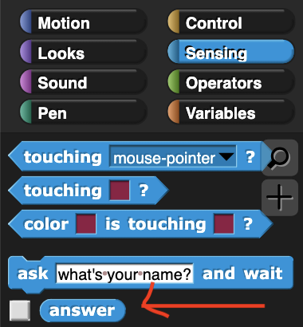
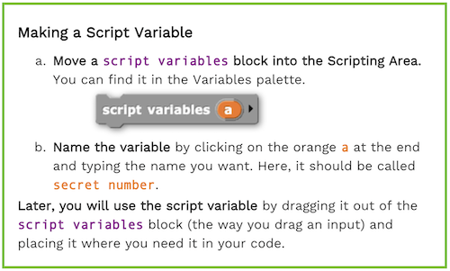
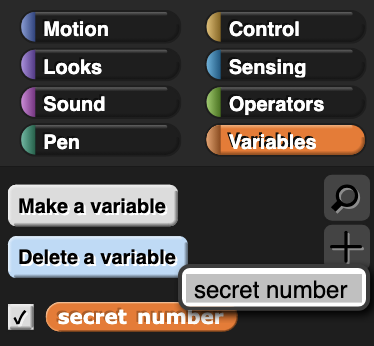
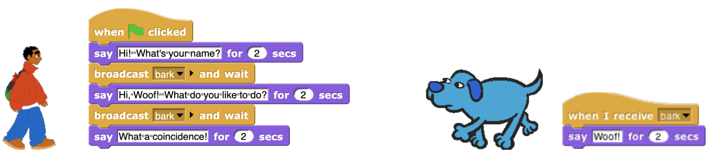

Guessing Game
Let's build a number guessing game where the player tries to guess a secret number!

-
Click here to open a new blank project.
-
Create a new variable called
secret number.
If you have not yet done the last project, Keeping Score, then you can follow the instructions below to create new variables.
-
The
 block under the "Sensing" palette will ask the player a question (which we can put in the blank space in the block), and then wait for the player to input an answer and press enter. Then, that answer will be stored in the
block under the "Sensing" palette will ask the player a question (which we can put in the blank space in the block), and then wait for the player to input an answer and press enter. Then, that answer will be stored in the  variable.
variable.
For example, the following block will cause the sprite to say "Guess what my number is!" and wait for a response.And you can access the response by dragging the oval-shaped
 block from the left-side bar under the "Sensing" palette:
Using the
 block, set
block, set secret numberto a random number (perhaps between 1 and 10) andaskthe player to guess what it is. After the player answers, check whether their matches the secret numberor not. Finally, give the player feedback:ifthe two numbers match, then the sprite shouldsaysomething like "congratulations!", otherwise it shouldsaysomethingelse -
Hmmm, this guessing game is a bit too easy since our
secret numberis visible in the top left corner of the stage. If only there was a way to make thesecret numberactually secret!
So far you have used global variables that all parts of the code can access. There are different types of variables called local variables (which Snap! calls scripting variables) which can only be accessed in specific parts of the code. If you've done the Row of Dollhouses project, then you've already seen script variables: The inputs to custom blocks only exist within the block and can't be used outside of them.
Predict: what do you think this code will do?
-
Build the code above and run it several times. What happened? You can follow the steps below to create new script variables.
You can create multiple variables from the same script variable block by clicking the black arrow to the right of your variable name.
-
Delete your variable
secret number.Now add a script variable block to your code that creates a local variable called
secret numberthat will be truly secret! -
Using the
 block that you used in the Row of Houses project,
block that you used in the Row of Houses project, repeataskingthe player to guess thesecret numberuntilthey successfully guess it. When the player finally succeeds, then you can congratulate them. -
The game is a little too hard, since the only feedback the player gets is whether or not they player guessed the right number. Edit your code so that after the player makes a wrong guess, tell them if their guess is too big or too small.
-
You can personalize this project just like with the Sprite Chase project, by changing the sprite costumes and the backgrounds.
-
(Optional) Let's give the player a sprite and have the two sprites talk to each other! Create a new sprite by clicking
 and personalize the sprite.
and personalize the sprite.
In the Sprite Chase project, you used thetellblock to control the second sprite so they could have a conversation. Snap! gives us another powerful tool for having sprites interact with eachother: thebroadcastandwhen_I_receiveblocks. Consider the code below:If you are confused about what this code is doing, try making the left block in one of your sprites and make the right block in your other sprite, then run it. What happened?
Using these blocks, have your two sprites take turns making secret numbers and asking each other to guess them.
Credits
Content adapted chiefly from pages 1 and 2 of BJC (June 2017) U2L1 "Starting a Number Guessing Game"